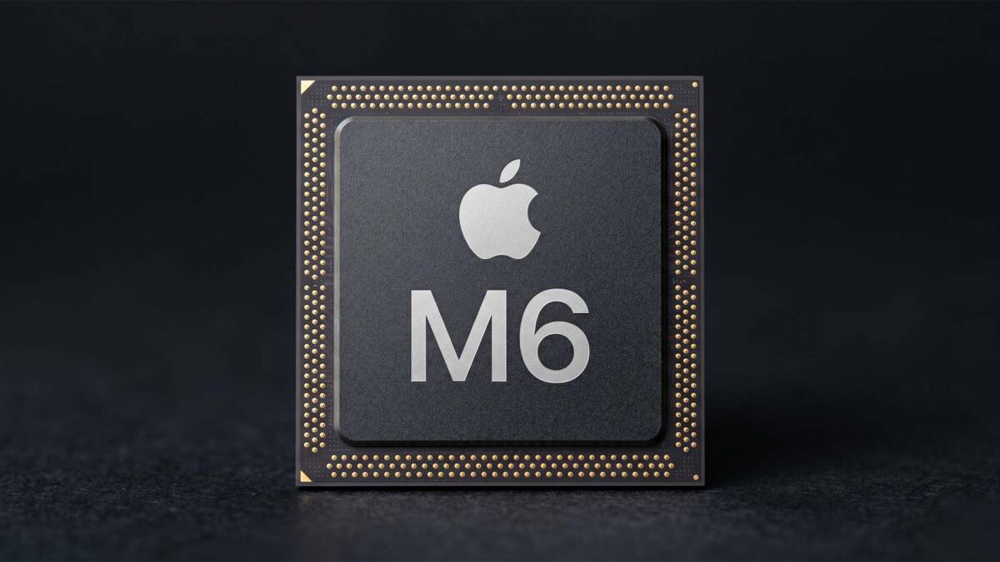

Новий OLED MacBook Pro під загрозою: Apple екстрено переглядає розробку процесорів
Компанія Apple готує наймасштабнішу зміну в стратегії випуску власних процесорів з моменту появи Apple Silicon. За даними авторитетного інсайдера Марка Гурмана з Bloomberg, купертинівці планують повністю відмовитися від розробки та релізу високопродуктивних чіпсетів M6 Pro та M6 Max. Замість них виробник зосередиться на прискореному створенні серії M7, орієнтованої на роботу зі штучним інтелектом.
Читати повністю